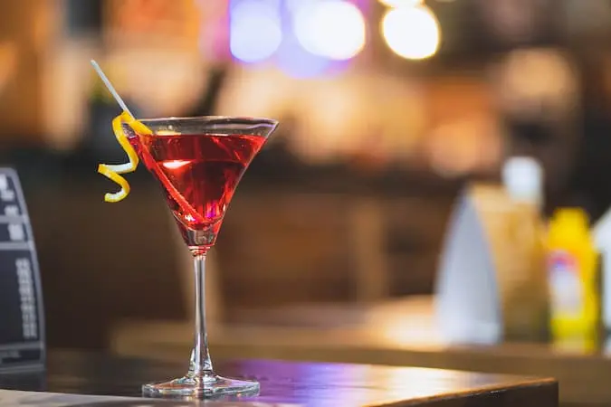

Cosmopolitan

Un cocktail rose, fruité et acidulé à la canneberge.
Ingrédients
- 4 cl de vodka
- 2 cl de liqueur d'orange (triple sec)
- 3 cl de jus de cranberry
- 1,5 cl de jus de citron vert
- Glaçons
Préparation
- Verser tous les ingrédients dans un shaker rempli de glaçons.
- Secouer énergiquement pendant 10 secondes.
- Filtrer dans un verre à cocktail bien froid.